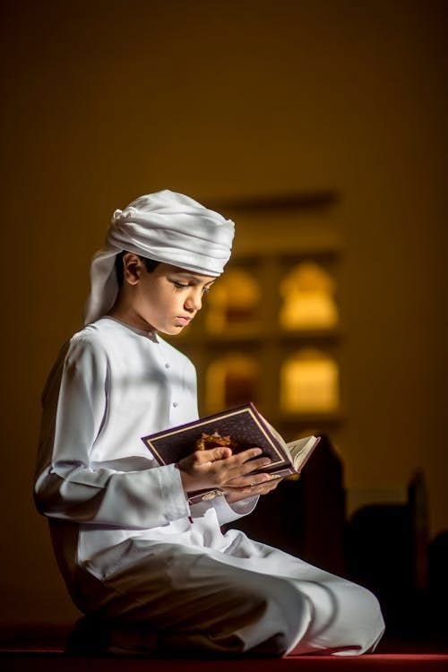

FOUNDATION
Noorani Qaida
For beginners learning Arabic letters, pronunciation, joining letters and basic reading rules.
Explore course →Learn to read, recite and understand the Holy Quran through structured online lessons led by dedicated teachers. Join Al-Bidayah from anywhere in the world.
Al-Bidayah Quran Academy is an online Quran education initiative based in Calicut, Kerala, India. We aim to make Quran learning accessible to students around the world through guided online lessons and supportive learning pathways.

Explore the learning experiences and study areas offered through Al-Bidayah Quran Academy.





Start with a course that matches your learning goals and current level.
For beginners learning Arabic letters, pronunciation, joining letters and basic reading rules.
Explore course →Learn Makharij, Sifaat, Noon Sakinah, Meem Sakinah, Madd, Qalqalah and other Tajweed rules.
Explore course →Structured memorisation with daily lessons, revision and teacher assessments.
Explore course →Existing monthly package prices are retained temporarily. Display prices in INR, USD or QAR.
Indicative conversions only. Final payment amount depends on the payment provider's exchange rate and fees.
Main Office: Calicut, Kerala, India. Qatar is a planned future branch location and will be announced when operational. The academy's current learning model is online.
View branch information →Calicut, Kerala
Planned future branch
Contact the academy to discuss course options, class schedules and admissions.
Book a Free Trial Class